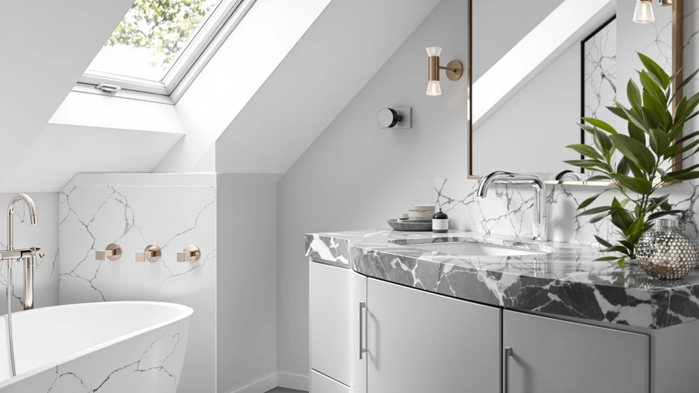

Quick Answer
This ironck bathroom vanity review finds the IRONCK 42 Inch Bathroom Vanity with Sink Set the better choice for most 40 to 44 inch single-sink bathrooms, thanks to its reversible drawer layout and three-drawer-plus-cubby storage. At $299.99 it costs about the same as the narrower SOLIDEE, eclife and NicBex vanities compared below, so the real decision comes down to width and finish rather than price.
Our pick: IRONCK 42 Inch Bathroom Vanity, $299.99 Check Price on Amazon
Bottom line: our top pick is the IRONCK 42 Inch Bathroom Vanity with Sink Set at $299.99.
Things to Know Before You Buy
- The IRONCK 42 Inch Bathroom Vanity ships as a reversible cabinet, so the drawers and open cubby can sit on either side of the sink depending on your plumbing layout.
- All four vanities in this ironck bathroom vanity comparison sit within three dollars of each other, between $296.83 and $299.99, which makes size and sink style the real deciding factor.
- Amazon does not publish a star rating or review count for any of these four listings yet, so treat early buyer comments as a trend rather than a verdict.
- The IRONCK and SOLIDEE both use MDF cabinet construction, while the NicBex is built for wall mounting instead of a floor-standing base.
- Faucet holes come pre-drilled on the IRONCK at a 4-inch spread, so check your existing faucet before you order a replacement.
This ironck bathroom vanity review examines the IRONCK 42 Inch Bathroom Vanity with Sink Set, a $299.99 reversible-cabinet model that turns up in search results for anyone replacing a dated single-sink setup. Shoppers at this price tend to ask the same three questions: will the drawers hold enough for daily use, does the ceramic sink resist staining, and can the cabinet be reconfigured if the plumbing sits on the wrong side of the room. We built this review from the product's spec sheet, its current Amazon price and the pattern in verified owner feedback, since this is a research-based comparison rather than an in-home trial.
The IRONCK comes out as a solid pick for most single-sink bathrooms between 40 and 44 inches wide, mainly because its reversible layout solves a problem the SOLIDEE, eclife and NicBex vanities below do not: it lets you move the drawer bank to whichever side keeps the door swing out of the walkway. At $299.99, it also lands within three dollars of the other three options in this comparison, so the decision mostly comes down to size, sink style and finish rather than budget. The sections below cover storage, sink durability and where the competition pulls ahead.
Why You Should Trust Us
Best Bathroom Vanities is run by Ilane Tall, who researches bathroom fixtures and reports on them rather than installing them for a trade. For this ironck bathroom vanity review, we read the manufacturer's listed specs, tracked Amazon's current pricing for all four vanities covered here and looked for recurring themes in the buyer feedback that is publicly available. We do not accept products from manufacturers, and the affiliate links on this page do not change which vanity we recommend first. When a listing lacks a published rating or review count, as all four do here, we say so instead of guessing.
Our Research Experience
Because this is a research-based review, our comparison method stays the same across every vanity we cover: start from the manufacturer's spec sheet for dimensions, material and sink type, then check the price Amazon lists that day against the price history for the same listing. From there, we scan the available buyer feedback for recurring complaints, things like drawers that stick, chips in the sink finish or hardware that arrives damaged, and weigh those against the features the manufacturer advertises. For this ironck bathroom vanity review specifically, we also compared drawer count, sink depth and overall footprint against the SOLIDEE, eclife and NicBex vanities, so the size difference between a 28-inch wall-mounted cabinet and a 42-inch floor vanity is clear before you commit to one width.
Overview & Specs

IRONCK 42 Inch Bathroom Vanity
What we like
- Reversible cabinet lets you swap the drawer bank and open cubby to either side of the sink
- Three drawers plus a full cabinet and a dedicated paper towel holder cover more storage than most vanities at this width
- Ceramic sink has a built-in overflow channel and pre-drilled 4-inch faucet holes, so a standard widespread faucet drops in without extra drilling
Flaws but not dealbreakers
- At 42.5 inches wide, it needs more floor space than narrower options like the 28-inch NicBex or the 32-inch SOLIDEE
- Only ships in white, a plainer look next to the black SOLIDEE or the gray-green eclife
| Material | MDF / engineered wood |
| Size | 18.8"D x 42.5"W x 34.1"H |
The headline feature on the IRONCK is its reversible design. The drawer bank, the open cubby and the side storage platform are not fixed to one side of the sink, so you can flip the layout to match whichever side your water lines and door swing favor. That is a real advantage over fixed-layout vanities like the eclife, where the drawer position is baked into the cabinet and can't move once it ships.
Storage is the other selling point. Between the three drawers, the enclosed cabinet, an open cubby and a slim paper towel holder, the IRONCK packs more distinct storage zones than the SOLIDEE or NicBex manage in their smaller footprints. The ceramic sink's overflow design and 4-inch pre-drilled faucet spread also mean a standard faucet installs without extra drilling, which keeps the swap closer to a weekend project than a full remodel. The tradeoff is size: at 42.5 inches wide, this is a vanity for a bathroom that can spare the floor space, not a tight half-bath.
What We Liked
The reversible cabinet is the single feature that sets the IRONCK apart from the other three vanities in this ironck bathroom vanity review. Instead of forcing you to plan plumbing around a fixed drawer layout, the cabinet can mirror itself, which matters most in older bathrooms where the supply lines were never centered to begin with.
Storage density also stands out. Three drawers, a full cabinet, an open cubby and a paper towel holder give you more places to sort toiletries than the single-drawer-and-shelf layout on the eclife or the simpler cabinet-and-drawer setup on the SOLIDEE. Drawer count tends to matter more than finish at this price point, and the IRONCK leads on that measure among the four vanities compared here.
The ceramic sink's overflow channel and pre-drilled 4-inch faucet holes also remove a common friction point. Many budget vanities ship with faucet holes that don't match a standard widespread faucet, turning a simple swap into an extra trip to the hardware store. The IRONCK avoids that problem outright.
What Could Be Better
Size is the first tradeoff. At 42.5 inches wide and 18.8 inches deep, the IRONCK needs more floor space than the 32-inch SOLIDEE or the wall-mounted 28-inch NicBex, so it is not a fit for a tight half-bath no matter how useful the reversible layout is.
Amazon does not list a star rating or review count for this vanity yet, which means there is no verified buyer track record to lean on beyond the manufacturer's own description. The same gap applies to the other three vanities in this comparison, but it is worth noting before you order one sight unseen.
IRONCK only ships this model in white, a plainer look next to the black SOLIDEE or the gray-green eclife. If the vanity needs to match a specific color scheme, that narrower palette could be a dealbreaker.
Who Is It For?
This ironck bathroom vanity review points toward one clear buyer: someone replacing a single-sink vanity in a mid-size bathroom who wants maximum drawer storage and flexibility on which side the plumbing sits. If your bathroom is wider than 40 inches and the plumber hasn't settled which side the drawers should face, the reversible cabinet removes that guesswork.
It is a weaker fit for anyone working with a narrow half-bath under 36 inches, where the 32-inch SOLIDEE or the wall-mounted 28-inch NicBex fit more comfortably, or for anyone set on a specific finish color beyond white.
Alternatives to Consider
If the IRONCK's size or white-only finish rules it out, the three vanities below sit in the same $296 to $300 price band and cover different footprints and finishes. Each one shows up frequently alongside the IRONCK in bathroom vanity searches, so we compared them on the same criteria: dimensions, sink type, storage layout and price.

Also Great
SOLIDEE 32'' Bathroom Vanity with
The SOLIDEE trades the IRONCK's width for a compact 32-inch footprint that fits bathrooms where 42 inches of floor space isn't available. At $299.90, it costs almost the same as the IRONCK despite being roughly 10 inches narrower, and the black cabinet with chrome zinc-alloy knobs reads more modern than the IRONCK's white finish. The cabinet uses 304 stainless steel hinges and a soft-close door, plus rust-proof alloy leg pads that should hold up better than painted feet in a humid bathroom. Storage runs lighter than the IRONCK's three-drawer layout, since the SOLIDEE's listing centers on a single cabinet and drawer rather than a full bank of drawers, so anyone who needs maximum storage should still default to the IRONCK. The listing requires self-assembly, and the vanity ships in two separate packages that can arrive on different days, so plan around that before installation day. For a narrower bathroom that still wants a soft-close cabinet and a darker finish, the SOLIDEE is the stronger match of the two.
$299.90
Check Price on Amazon
Also Great
eclife 36" Bathroom Vanities Sink
The eclife splits the difference on size at 36 inches wide, between the IRONCK's 42.5 inches and the SOLIDEE's 32. Its undermount single sink and matte black faucet give it a more finished, two-tone look than either competitor, and the gray-green cabinet color is the only non-neutral option across all four vanities in this comparison. Storage runs to two shelves and two drawers, a simpler layout than the IRONCK's three-drawer-plus-cubby setup, so buyers who prioritize storage volume over style should still lean toward the IRONCK. The soft-closing hinge system is a shared feature across most vanities in this price range, including the IRONCK and SOLIDEE, so it's a baseline expectation at this price rather than a unique advantage. At $297.49, the eclife sits almost exactly between the other three on price, which makes the decision mostly about whether the painted wave-line cabinet front and undermount sink fit the room's style better than a flat white or black front would.
$297.49
Check Price on Amazon
Best Value
NicBex 28" Bathroom Vanity with
The NicBex is the only wall-mounted vanity in this comparison, and that single difference changes who it is for. At 28 inches wide, it is built for small bathrooms or powder rooms where floor space is tight enough that a floating cabinet actually matters, and wall mounting also makes floor cleaning easier since there is no base to clean around. The semi-recessed ceramic sink has a glossy, scratch-resistant finish, and the cabinet includes a soft-close door plus open shelving instead of enclosed drawers. That open-shelf layout trades privacy for easy access, which won't suit everyone who wants to keep toiletries out of sight. At $296.83, it is the least expensive of the four vanities here, and for a half-bath where 42 inches of the IRONCK simply won't fit, the NicBex is the more realistic option despite having less enclosed storage.
$296.83
Check Price on AmazonFrequently Asked Questions
Is the IRONCK 42 Inch Bathroom Vanity worth the price?
Based on this ironck bathroom vanity review, yes for most single-sink bathrooms between 40 and 44 inches wide. At $299.99, it offers more enclosed storage than the SOLIDEE or eclife through its three drawers, open cubby and side platform, plus a reversible layout that lets you match the plumbing on either side of the room.
How does the IRONCK vanity compare to the SOLIDEE vanity?
Width is the main difference. The IRONCK measures 42.5 inches wide by 18.8 inches deep, while the SOLIDEE measures 32 inches wide by 19 inches deep. The SOLIDEE's black cabinet and chrome zinc-alloy knobs also give it a more modern look than the IRONCK's white finish, but it trades away some of the IRONCK's drawer storage.
Does the IRONCK bathroom vanity have a published star rating?
No. As of this review, the IRONCK listing does not display a public star rating or review count, and the same is true for the SOLIDEE, eclife and NicBex vanities covered here. Treat that as unknown rather than a mark against the product, and watch the listing for verified reviews before you order.
Final Verdict
This ironck bathroom vanity review comes down to width and storage versus floor space. The IRONCK 42 Inch Bathroom Vanity is the stronger pick for most single-sink bathrooms between 40 and 44 inches wide, since its reversible drawer layout, three-drawer-plus-cubby storage and pre-drilled faucet holes solve more practical problems than the narrower SOLIDEE, eclife or NicBex can at the same roughly $300 price. If your bathroom cannot spare 42.5 inches of width, the 32-inch SOLIDEE or the wall-mounted 28-inch NicBex are the better fit, and the eclife splits the difference at 36 inches with a more finished two-tone look. Whichever one you choose, confirm the current Amazon price and listed dimensions before ordering, since none of these four listings carries enough verified review history yet to catch a sizing mistake after the fact.